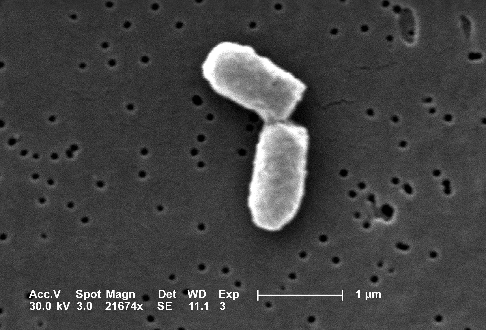

1 One variable in discrete time
All living things change over time, and this evolution can be quantitatively measured and analyzed. Mathematics makes use of equations to define models that change with time, known as dynamical systems. In this unit we will learn how to construct models that describe the time-dependent behavior of some measurable quantity in life sciences. Numerous fields of biology use such models, and in particular we will consider changes in population size, the progress of biochemical reactions, the spread of infectious disease, and the spikes of membrane potentials in neurons, as some of the main examples of biological dynamical systems.
Many processes in living things happen regularly, repeating with a fairly constant time period. One common example is the reproductive cycle in species that reproduce periodically, whether once a year, or once an hour, like certain bacteria that divide at a relatively constant rate under favorable conditions. Other periodic phenomena include circadian (daily) cycles in physiology, contractions of the heart muscle, and waves of neural activity. For these processes, theoretical biologists use models with discrete time, in which the time variable is restricted to the integers. For instance, it is natural to count the generations in whole numbers when modeling population growth.
This chapter is devoted to analyzing dynamical systems in which time is measured in discrete steps. We will build dynamic models, find their mathematical solutions, and then use Python to compute the solutions and plot them. In this chapter you will learn to:
- build discrete-time models of populations using rate paramaters
- define and verify mathematical solutions of these models
- use Python to compute and plot solutions
1.1 Building dynamic models
Let us construct our first models of biological systems! We will start by considering a population of some species, with the goal of tracking its growth or decay over time. The variable of interest is the number of individuals in the population, which we will call \(N\). This is called the dependent variable, since its value changes depending on time; it would make no sense to say that time changes depending on the population size. Throughout the study of dynamical systems, we will denote the independent variable of time by \(t\). To denote the population size at time \(t\), we can write \(N(t)\) but sometimes use \(N_t\).
1.1.1 static population
In order to describe the dynamics, we need to write down a rule for how the population changes. Consider the simplest case, in which the population stays the same for all time. (Maybe it is a pile of rocks?) Then the following equation describes this situation:
\[ N(t+1) = N(t) \]
This equation mandates that the population at the next time step be the same as at the present time \(t\). This type of equation is generally called a difference equation, because it can be written as a difference between the values at the two different times:
\[ N(t+1) - N(t) = 0 \]
This version of the model illustrates that a difference equation at its core describes the increments of \(N\) from one time step to the next. In this case, the increments are always 0, which makes it plain that the population does not change from one time step to the next.
1.1.2 exponential population growth
Let us consider a more interesting situation: as a colony of dividing bacteria. such as E. coli, shown in {numref}fig-cell-div. We assume that each bacterial cell divides and produces two daughter cells at fixed intervals of time, and let us further suppose that bacteria never die. Essentially, we are assuming a population of immortal bacteria with clocks. This means that after each cell division the population size doubles. As before, we denote the number of cells in each generation by \(N(t)\), and obtain the equation describing each successive generation:
\[ N(t+1) = 2N(t) \]
It can also be written in the difference form, as above:
\[ N(t+1) - N(t) = N(t) \]
The increment in population size is determined by the current population size, so the population in this model is forever growing. This type of behavior is termed exponential growth and we will see how to express the solution algebraically in the next section.

1.1.3 example with birth and death
Suppose that a type of fish lives to reproduce only once after a period of maturation, after which the adults die. In this simple scenario, half of the population is female, a female always lays 1000 eggs, and of those, 1% survive to maturity and reproduce. Let us set up the model for the population growth of this idealized fish population. The general idea, as before, is to relate the population size at the next time step \(N(t+1)\) to the population at the present time \(N(t)\).
Let us tabulate both the increases and the decreases in the population size. We have \(N(t)\) fish at the present time, but we know they all die after reproducing, so there is a decrease of \(N(t)\) in the population. Since half of the population is female, the number of new offspring produced by \(N(t)\) fish is \(500N(t)\). Of those, only 1% survive to maturity (the next time step), and the other 99% (\(495N(t)\)) die. We can add all the terms together to obtain the following difference equation:
\[ N(t+1) = N(t) - N(t) + 500N(t) - 495 N(t) = 5N(t) \]
The number 500 in the expression is the birth rate of the population per individual, and the negative terms add up to the death rate of 496 per individual. We can re-write the equation in difference form:
\[ N(t+1) - N(t) = 4N(t) \]
This expression again generates growth in the population, because the birth rate outweighs the death rate. (allman_mathematical_2003?)
1.1.4 dimensions of birth and death rates
What distinguishes a mathematical model from a mathematical equation is that the quantities involved have a real-world meaning. Each quantity represents a measurement, and associated with each one are the units of measurement, which are familiar from science courses. In addition to units, each variable and parameter has a meaning, which is called the dimension of the quantity. For example, any measurement of length or distance has the same dimension, although the units may vary. The value of a quantity depends on the units of measurement, but its essential dimensionality does not. One can convert a measurement in meters to that in light-years or cubits, but one cannot convert a measurement in number of sheep to seconds - that conversion has no meaning.
Thus leads us to the fundamental rule of mathematical modeling: terms that are added or subtracted must have the same dimension. This gives mathematical modelers a useful tool called dimensional analysis, which involves replacing the quantities in an equation with their dimensions. This serves as a check that all dimensions match, as well as allowing to deduce the dimensions of any parameters for which the dimension was not specified.
In the case of population models, the birth and death rates measure the number of individuals that are born (or die) within a reproductive cycle for every individual at the present time. Their dimensions must be such that the terms in the equation all match:
\[ [N(t+1) - N(t)] = [population] = [r] [N(t)] = [r] *[population] \]
This implies that \([r]\) is algebraically dimensionless. However, the meaning of \(r\) is the rate of change of population over one (generation) time step. \(r\) is the birth or death rate of the population per generation, which is what makes is dimensionless. If the length of the generation were to change, but the reproduction and death per generation remain the same, then the paramter \(r\) would be the same, because it had been rescaled by the length of the generation. If they were to be reported in absolute units (e.g. individuals per year) then the rate would be different.
1.1.5 general demographic model
We will now write a general difference equation for any population with constant birth and death rates. This will allow us to substitute arbitrary values of the birth and death rates to model different biological situations. Suppose that a population has the birth rate of \(b\) per individual, and the death rate \(d\) per individual. Then the general model of the population size is:
\[ N(t+1) = (1 + b - d)N(t) \] (lin-pop)
The general equation also allows us to check the dimensions of birth and death rates, especially as written in the incremental form: \(N(t+1) - N(t) = (b - d)N(t)\). The change in population rate over one reproductive cycle is given by the current population size multiplied by the difference of birth and death rates, which as we saw are algebraically dimensionless. The right hand side of the equation has the dimensions of population size, matching the difference on the left hand side. (edelstein-keshet_mathematical_2005?)
1.2 Solutions of linear difference models
We saw in the last section that we can write down equations to describe, step by step, how a variable changes over time. Let us define what the terminology of these equations:
```{admonition} Definition An equation to describe a variable (e.g. N) that changes over discrete time steps described by the integer variable \(t\) is called a difference equation or a discrete-time dynamic model. These equations can be written in two ways, either in recurrent form:
\[ N(t+1) = f(N(t)) \] (recur-eq)
or in increment form:
\[ N(t+1) - N(t) = g(N(t)) \] (recur-eq)
### simple linear difference models
Having set up the difference equation models, we would naturally like to solve them to find out how the dependent variable, such as population size, varies over time. A solution may be *analytic*, meaning that it can be written as a formula, or *numeric*, in which case it is generated by a computer in the form of a sequence of values of the dependent variable over a period of time. In this section, we will find some simple analytic solutions and learn to analyze the behavior of difference equations which we cannot solve exactly.
```{admonition} Definition
A function $N(t)$ is a *solution* of a difference equation $N(t+1) = f(N(t))$ if it satisfies that equation for all values of time $t$.For instance, let us take our first model of the static population, \(N(t+1) = N(t)\). Any constant function is a solution, for example, \(N(t) = 0\), or \(N(t) = 10\). There are actually as many solutions as there are numbers, that is, infinitely many! In order to specify exactly what happens in the model, we need to specify the size of the population at some point, usually, at the “beginning of time”, \(t = 0\). This is called the initial condition for the model, and for a well-behaved difference equation it is enough to determine a unique solution. For the static model, specifying the initial condition is the same as specifying the population size for all time.
Now let us look at the general model of population growth with constant birth and death rates. We saw in equation {eq}lin-pop above that these can be written in the form \(N(t+1) = (1 + b - d) N(t)\). To simplify, let us combine the numbers into one growth parameter \(r = 1 + b - d\), and write down the general equation for population growth with constant growth rate:
\[ N(t+1) = rN(t) \] (lin-pop-r)
To find the solution, consider a specific example, where we start with the initial population size \(N_0 = 1\), and the growth rate \(r=2\). The sequence of population sizes is: 1, 2, 4, 8, 16, etc. This is described by the formula \(N(t) = 2^t\).
In the general case, each time step the solution is multiplied by \(r\), so the solution has the same exponential form. The initial condition \(N_0\) is a multiplicative constant in the solution, and one can verify that when \(t=0\), the solution matches the initial value:
\[ N(t) = r^t N_0 \] (lin-pop-sol)
I would like the reader to pause and consider this remarkable formula. No matter what the birth and death parameters are selected, this solution predicts the population size at any point in time \(t\).
In order to verify that the formula for \(N(t)\) is actually a solution in the meaning of definition, we need to check that it actually satisfies the difference equation for all \(t\), not just a few time steps. This can be done algebraically by plugging in \(N(t+1)\) into the left side of the dynamic model and \(N(t)\) into the right side and checking whether they match. For \(N(t)\) given by equation {eq}lin-pop-sol, \(N(t+1) = r^{t+1} N_0\), and thus the dynamic model becomes:
\[ r^{t+1} N_0 = r \times r^t N_0 \]
Since the two sides match, this means the solution is correct.
The solutions in equation {eq}lin-pop-sol are exponential functions, which have a limited menu of behaviors, depending on the value of \(r\). If \(r > 1\), multiplication by \(r\) increases the size of the population, so the solution \(N(t)\) will grow (see {numref}fig-exp-growth. If \(r < 1\), multiplication by \(r\) decreases the size of the population, so the solution \(N(t)\) will decay (see {numref}fig-exp-decay). Finally, if \(r=1\), multiplication by \(r\) leaves the population size unchanged, like in the pile of rocks model. Here is the complete classification of the behavior of population models with constant birth and death rates (assuming \(r>0\)):
```{admonition} Classification of solutions of linear dynamic models :class: tip
For a difference equation \(N(t+1) = rN(t)\), solutions can behave in one of three ways:
\(|r| > 1\): \(N(t)\) grows without bound
\(|r| < 1\): \(N(t)\) decays to 0
$|r| = 1 $: the absolute value of \(N(t)\) remains constant
Se examples of graphs of solutions of such equations with $r$ greater than 1 in {numref}`fig-exp-growth` and solutions for $r$ less than 1 in {numref}`fig-exp-decay`.
```{figure} images/ch1_exp_growth.png
---
name: fig-exp-growth
---
Growth of a population that doubles every generation over 6 generations.| ```{figure} images/ch1_exp_decay.png |
|---|
| name: fig-exp-decay |
Decay of a population in which half the individuals die every time step over 6 generations ```
1.2.1 linear difference models with a constant term
Now let us consider a dynamic model that combines two different rates: a proportional rate (\(rN\)) and a constant rate which does not depend on the value of the variable \(N\). We can write such a generic model as follows:
\[ N(t+1) = rN(t) + a \]
The right-hand-side of this equation is a linear function of \(N\), so this is a linear difference equation with a constant term. What function \(N(t)\) satisfies it? One can quickly check that that the same solution \(N(t) = r^t N_0\) does not work because of the pesky constant term \(a\):
\[ r^{t+1} N_0 \neq r \times r^t N_0 + a \]
To solve it, we need to try a different form: specifically, an exponential with an added constant. The exponential can be reasonably surmised to have base \(r\) as before, and then leave the two constants as unknown: \(N(t) = c_1 r^t + c_2\). To figure out whether this is a solution, plug it into the linear difference equation above and check whether a choice of constants can make the two sides agree:
\[ N(t+1) = c_1 r^{t +1} + c_2 = rN(t) + a = rc_1 r^t + rc_2+ a \]
This equation has the same term \(c_1 r^{t +1}\) on both sides, so they can be subtracted out. The remaining equation involves only \(c_2\), and its solution is \(c_2 = a/(1-r)\). Therefore, the general solution of this linear difference equation is the following expreis which is determined from the initial value by plugging \(t=0\) and solving for \(c\).
\[ N(t) = c r^t + \frac{a}{1-r} \label{eq:ch14_sol_wconst} \]
Example. Take the difference equation \(N(t+1) = 0.5 N(t) + 40\) with initial value \(N(0)= 100\). The solution, according to our formula is \(N(t) = c 0.5^t + 80\). At \(N(0) = 100 = c+80\), so \(c=20\). Then the compete solution is \(N(t) = 20*0.5^t + 80\). To check that this actually works, plug this solution back into the difference equation:
\[ N(t+1) = 20 \times 0.5^{t+1} + 80 = 0.5 \times (20 \times 0.5^t + 80) + 40 = 20 \times 0.5^{t+1} + 80 \]
The equation is satisfied and therefore the solution is correct.